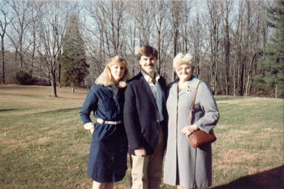

Helen Fortune
1962 - ?

Helen, Brett, and his mother Phyllis in 1984.
Helen Anne Neilander was born in 1962. She married
Brett Fortune
on June 23, 1984. They made a home in Alparetta, GA and there had four children. Because of the spread between the children they call them phase 1 & phase 2.
Parents:
?
Offspring:
Alissa Lee Fortune
1991 - ?
Natalie Brooke Fortune
1993 - ?
Dane Harrison Fortune
1997 - ?
Shawn Christopher Fortune
2000 - ?
References:
1. Helen Fortune
2. Bradley James Wogsland
Last modified on 20 July 2005 by
Bradley James Wogsland
.